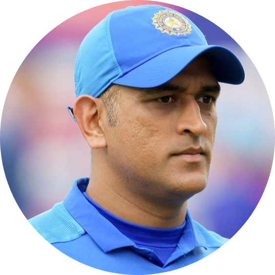
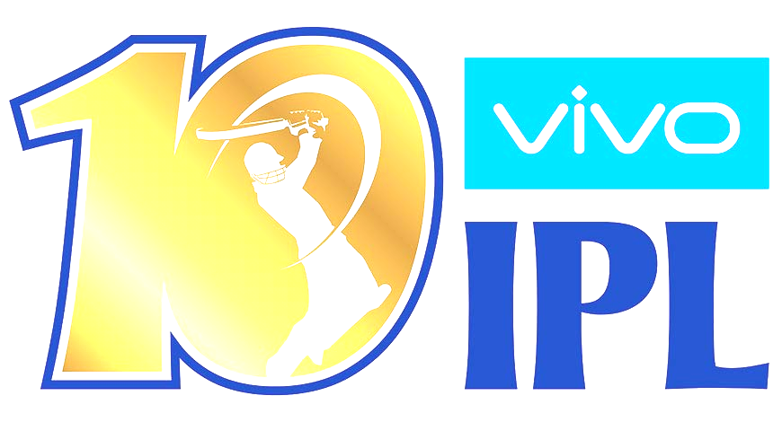
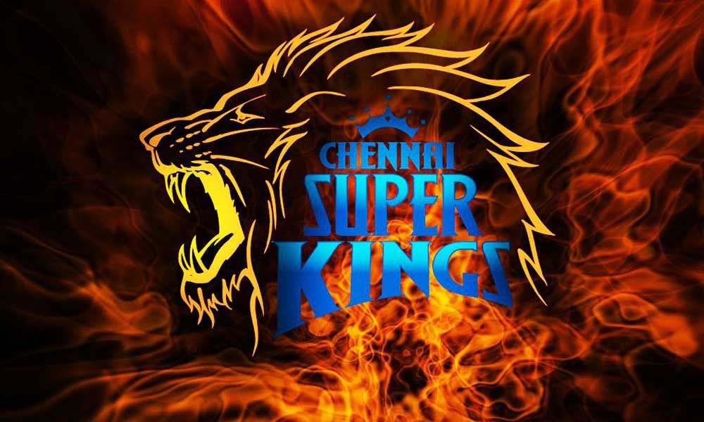

|  | He is a former Indian International Cricketer.He is the one an only a captain who lift the all icc trophy. The tamilnadu people call the dhoni as Thala |
| NAME : | M.S.DHONI |
| AGE : | 39 |
| DATA OF BIRTH : | 7 July 1981 at Ranchi |
| Runs in Tests and ODI : | Click here to see his runs detils |
| Runs in T20 | 1617Runs |
Indian Premier League

|  |
| Matches | 190 |
| Runs | 4,432 |
| 50s/100s | 23/0 |
| Average | 42.40 |
| Strike Rate | 137.85 |
| Win | 104 |
He is a Chennai Super Kings (CSK)captain.There are so many Thala dhoni fans in Tamil Nadu(TN)
No one can forgot that moment when dhoni hit a six and india lift the world cup.If you want that video clickhere and enjoy the magical moment.when ever the cricket fans see this video the goosebumps came.The people call dhoni as mahi,MSD,captain cool,Thala.